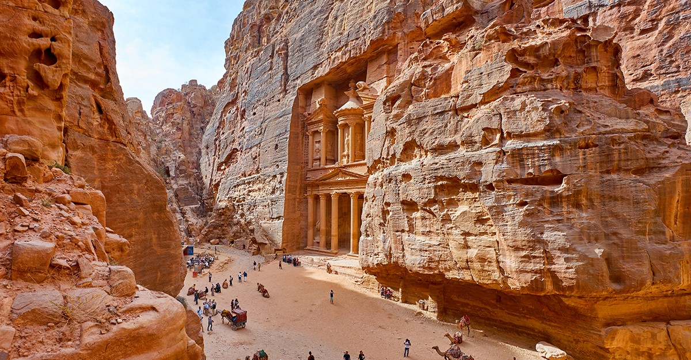

|  |
Petra es la primera de las siete nuevas maravillas del Mundo Moderno. Esta ciudad de Jordania, originalmente conocida como Raqmu, es famosa por su arquitectura excavada en la roca además de por sus avanzado sistema de conductos de agua. |
| Petra es conocida como la Ciudad Perdida porque si bien su historia se remonta a la época de los nabateos, en el siglo VII a.C, en la Edad Media fue completamente abandonada y no fue «descubierta» por los occidentales hasta principios del siglo XIX. | |